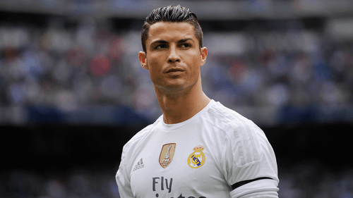
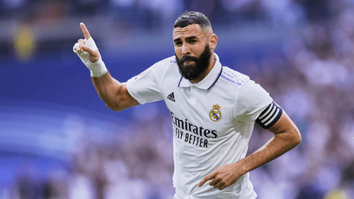
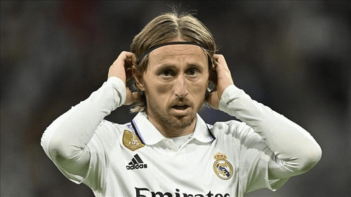
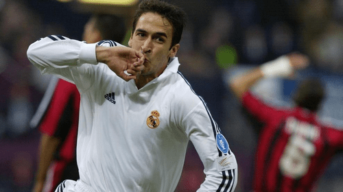
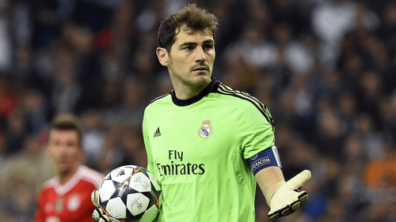
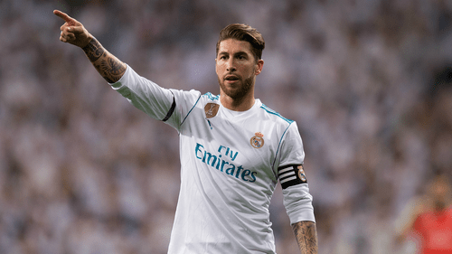
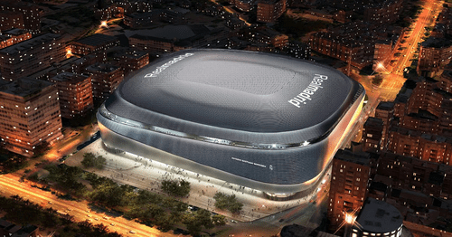
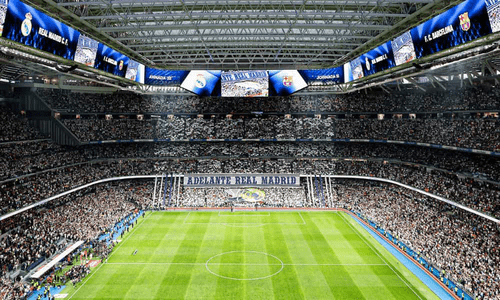

Légendes du club

Cristiano Ronaldo, meilleur buteur de l'histoire du club avec 450 buts

Karim Benzema, meilleur passeur de l'histoire du club avec 165 passes décisives

Luka Modric, joueur le plus titré de l'histoire du club avec 27 titres

Raul Gonzalez, joueur le plus capé de l'histoire du club avec 741 matchs

Iker Casillas, gardien légendaire du club avec 725 matchs sous le maillot madrilène

Sergio Ramos, capitaine emblématique qui a soulevé les 3 ligues des champions consécutives
Le stade Santiago Bernabéu

Vue extérieur

Vue intérieur